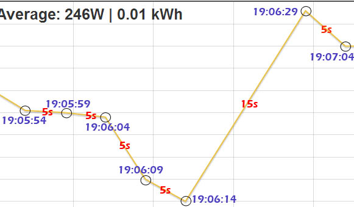
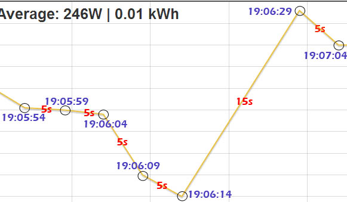

Is it normal to see missing datapoints in emoncms charts?
I have two emontx's as inputs (one running MartinR's solar diverter sketch) feeding emoncms on a Raspberry Pi, and I've noticed that there are missing datapoints displayed on the charts as below. Normally MartinR's emonTX updates every 5 seconds, but occasionally I have gaps in the chart nodes of 10 or 15 seconds (1 or 2 chart nodes missing).
The emonTX & RaspPi are only about 4 mtrs apart in the garage, so signal strength shouldn't be a problem.
I've also noticed missing chart nodes from the other emonTX too, but it does not appear to be data collisions from the two units, as a multigraph shows them arriving well clear of each other.

I should add that I am also running Samba file share, and minidlna media server from the same Raspberry Pi.
I have also converted the Mysql database to MYISAM as per Trystan's blog.
Missing Feed Datapoints
Submitted by Paul Reed on Mon, 01/07/2013 - 19:15Is it normal to see missing datapoints in emoncms charts?
I have two emontx's as inputs (one running MartinR's solar diverter sketch) feeding emoncms on a Raspberry Pi, and I've noticed that there are missing datapoints displayed on the charts as below. Normally MartinR's emonTX updates every 5 seconds, but occasionally I have gaps in the chart nodes of 10 or 15 seconds (1 or 2 chart nodes missing).
The emonTX & RaspPi are only about 4 mtrs apart in the garage, so signal strength shouldn't be a problem.
I've also noticed missing chart nodes from the other emonTX too, but it does not appear to be data collisions from the two units, as a multigraph shows them arriving well clear of each other.

I should add that I am also running Samba file share, and minidlna media server from the same Raspberry Pi.
I have also converted the Mysql database to MYISAM as per Trystan's blog.
Paul